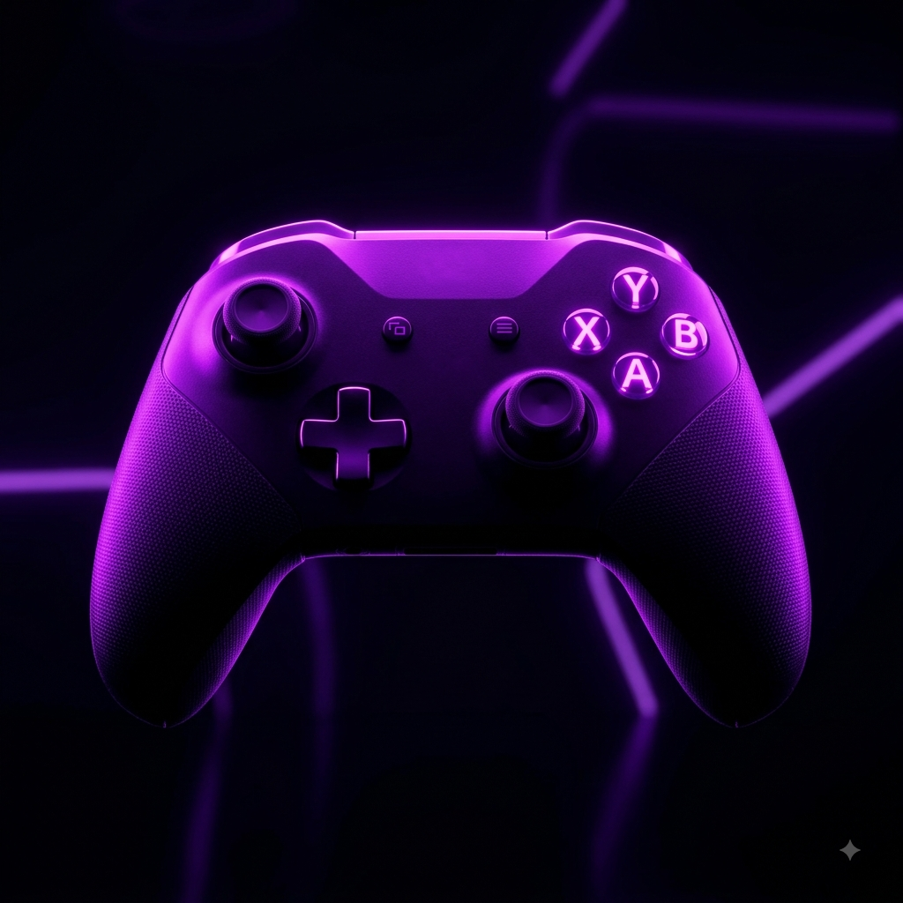
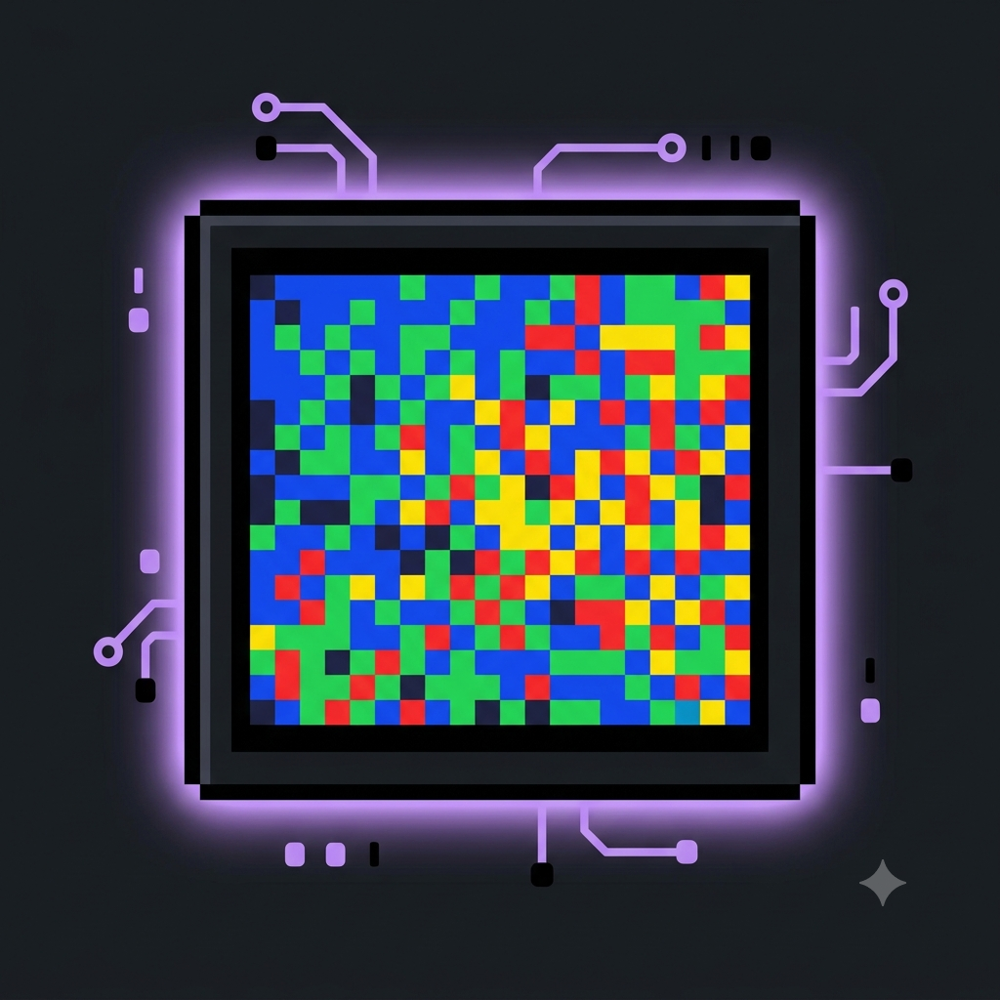

Bem-vindos ao meu blog!
Por: Laurent Blank Ferreira
Dê o start! Boas-vindas ao meu novo espaço. Aqui vou compartilhar análises, curiosidades da história dos videogames e dicas de jogabilidade.
Compartilhando novidades, curiosidades e a paixão pelo universo dos jogos

Por: Laurent Blank Ferreira
Dê o start! Boas-vindas ao meu novo espaço. Aqui vou compartilhar análises, curiosidades da história dos videogames e dicas de jogabilidade.
Por: Laurent Blank Ferreira
O Magnavox Odyssey foi o primeiro console doméstico, lançado em 1972. Mas foi o fliperama "Pong" da Atari que realmente popularizou a indústria no mundo todo!
Fonte: IGN Brasil
Por: Laurent Blank Ferreira
Sabia que o criador do Pac-Man, Toru Iwatani, teve a ideia para o formato icônico do personagem ao olhar para uma pizza que estava faltando apenas uma fatia?
Fonte: Voxel

Por: Laurent Blank Ferreira
Em jogos, "bugs" e glitches podem criar lendas urbanas. Quem não se lembra do MissingNo no Pokémon Red/Blue? Um erro de programação que virou parte da cultura gamer.
Fonte: Nintendo Life

Por: Laurent Blank Ferreira
As competições de jogos eletrônicos não são mais nicho. Hoje em dia, grandes finais de torneios, como os de League of Legends, atraem mais espectadores que muitos eventos esportivos tradicionais.
Fonte: The Esports Observer

Por: Laurent Blank Ferreira
O futuro dos games aponta para duas grandes tendências: a imersão total com a Realidade Virtual (VR) e a facilidade do Cloud Gaming, permitindo jogar títulos pesados sem precisar de um console físico.
Fonte: TechRadar